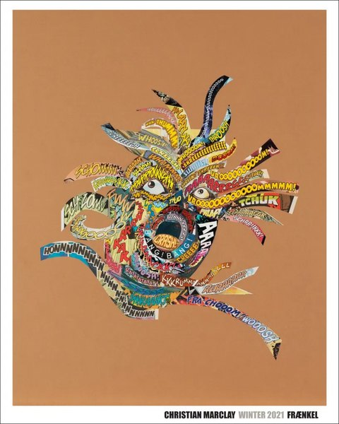

CRVI000247Marisol - Untitled
Exhibition Poster · 1960-65 · 1960-65
Exhibition Poster · 1960-65 · 1960-65

CRVI002233Oskar Schlemmer - Bauhausausstellung 1923
1923
1923

CRVI000246Keiji Usami - Louisiana exhibition poster
Exhibition poster · Louisiana Museum of Modern Art
Exhibition poster · Louisiana Museum of Modern Art

CRVI002712Shin Matsunaga - The Design Works of Shin Matsunaga
1994
1994

CRVI002685Shigeo Fukuda - The Fukuda Museum
1980
1980

CRVI002682Kazumasa Nagai - Japanische Plakate – heute
2006
2006

CRVI002634Joseph Maria Olbrich - Kölner Ausstellung
1907
1907

CRVI002519Josef Müller-Brockmann - Helmhaus Zürich: Aus der Sammlung des Kunsthauses Zürich, Neuere Schweizer Kunst
1953
1953

CRVI002713Shin Matsunaga - Shin Matsunaga Design: Razstava ob BIO 14
1994
1994

CRVI002508Milton Glaser - Floating pear
1977
1977

CRVI000248Tetsuya Ishida - Mebae
Exhibition Poster · 1998 · 1998
Exhibition Poster · 1998 · 1998

CRVI002805Wolfgang Weingart - Kunstkredit 1982/83
1983
1983

CRVI002794Unattributed - zürcher maler, Kunsthalle Basel

CRVI002795Unattributed - Japanische Kalligraphie und westliche Zeichen, Kunsthalle Basel

CRVI002714Shin Matsunaga - Freaks
1995
1995

CRVI002679Kazumasa Nagai - 日本のデザイン展望 (Exhibition Designs Today)
1960
1960

CRVI002787Jan Lenica - Jan Lenica: Plakat & Film
1983
1983

CRVI002670Unattributed - 世界のポスター展 (World Poster Exhibition)
1982
1982

CRVI002626Koloman Moser - Secession: V. Kunstausstellung
1899
1899

CRVI002735Christian Marclay - Christian Marclay, Winter 2021 (Fraenkel Gallery)
2021
2021

CRVI002640Ferdinand Hodler - Secession XIX. Ausstellung
1904
1904

CRVI002639Ferdinand Andri - XXVI. Ausstellung Secession
1906
1906

CRVI002632Alfred Roller - Plakat für die XIV. Ausstellung der Secession
1902
1902

CRVI002542Berthold Löffler - Kunstschau Wien 1908
1908
1908

CRVI002696Ryuichi Yamashiro - 2nd International Biennial Exhibition of Prints in Tokyo
1960
1960

CRVI002690Unattributed - Uncovering the Work of Takashi Kono
2021
2021

CRVI002498Koichi Sato - グラフィックデザイナー 佐藤晃一展 (Graphic Designer Koichi Sato)
2017
2017

CRVI002788Waldemar Świerzy - Muzeum Plakatu ma 20 lat
1988
1988

CRVI002681Kazumasa Nagai - The 1st International Triennial of Poster in Toyama
1985
1985

CRVI002654Koga Hirano - Czech Avant-Garde Book Design 1920's-30s
1996
1996

CRVI002665Yusaku Kamekura - グラフィック '55 (Graphic '55)
1955
1955

CRVI002659Unattributed - 小林清親から川瀬巴水まで トワイライト新版画 (From Kobayashi Kiyochika to Kawase Hasui)
2026
2026

CRVI002646Joseph Maria Olbrich - Plakat für die II. Ausstellung der Wiener Secession
1898
1898

CRVI002675Kazumasa Nagai - 永井一正の世界展 (The World of Kazumasa Nagai)

CRVI000819Seymour Chwast - Push Pin Butcher
Mixed media · 46 × 74 cm · 1981
Mixed media · 46 × 74 cm · 1981

CRVI002786Jan Lenica - Affiches, Cinéma d'animation, Galerie Solothurn
1976
1976

CRVI002689Noriaki Yokosuka - 12 Graphistes Japonais: Tradition et Nouvelles Techniques
1984
1984

CRVI002804Unattributed - Wolfgang Weingart, Barbican Art Gallery
2015
2015

CRVI002648Egon Schiele - Secession 49. Ausstellung
1918
1918

CRVI002672Unattributed - DNPグラフィックデザイン・アーカイブ収蔵品展 IV: 田中一光ポスター 1980–2002
2012
2012

CRVI002791Armin Hofmann - Kunsthalle Basel: Maurice Estève, Berto Lardera

CRVI002677Unattributed - 日仏現代ポスター交流展 (Japan–France Contemporary Poster Exchange)
1986
1986

CRVI002511Josef Müller-Brockmann - der Film
1960
1960

CRVI002792Armin Hofmann - Armin Hofmann: Posters, The Museum of Modern Art
1981
1981